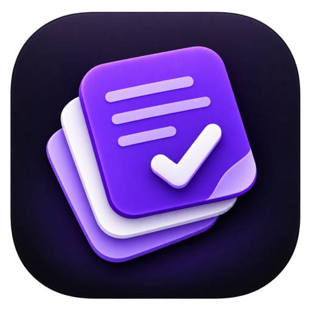
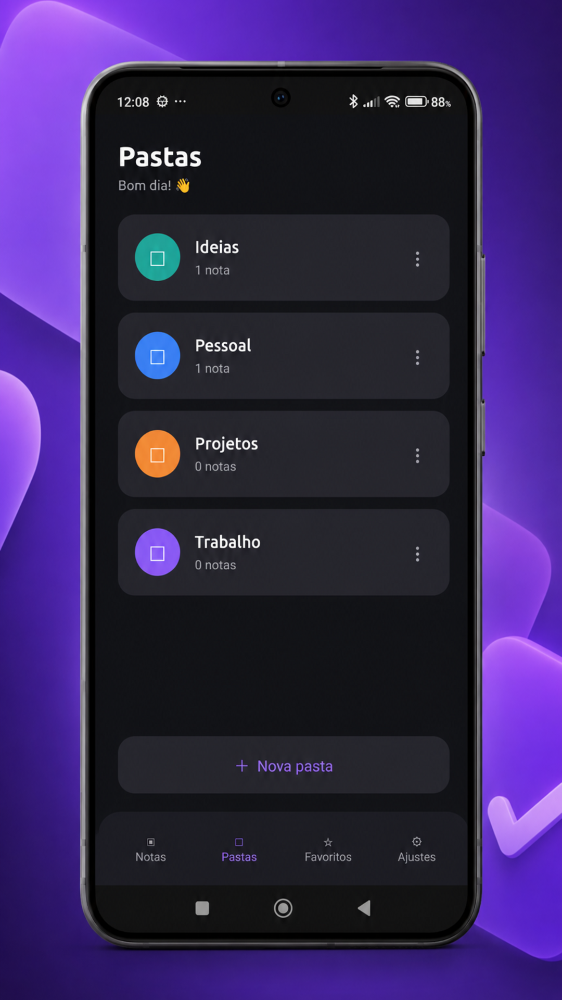
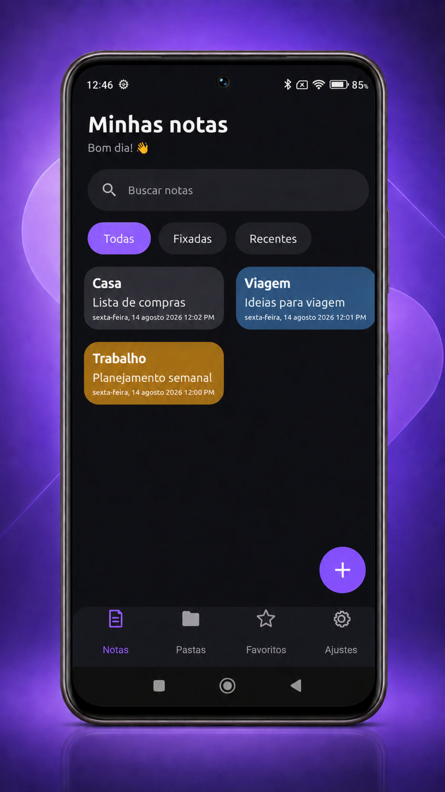
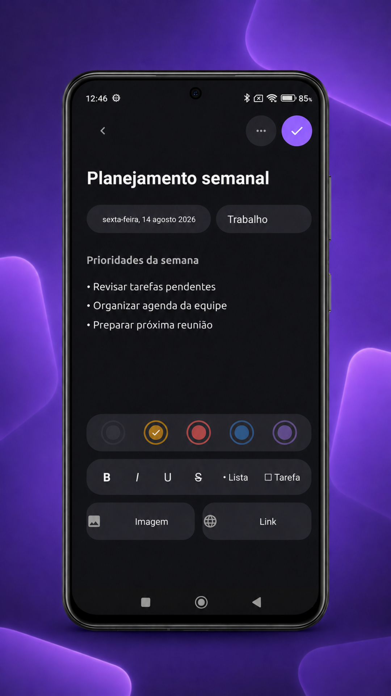
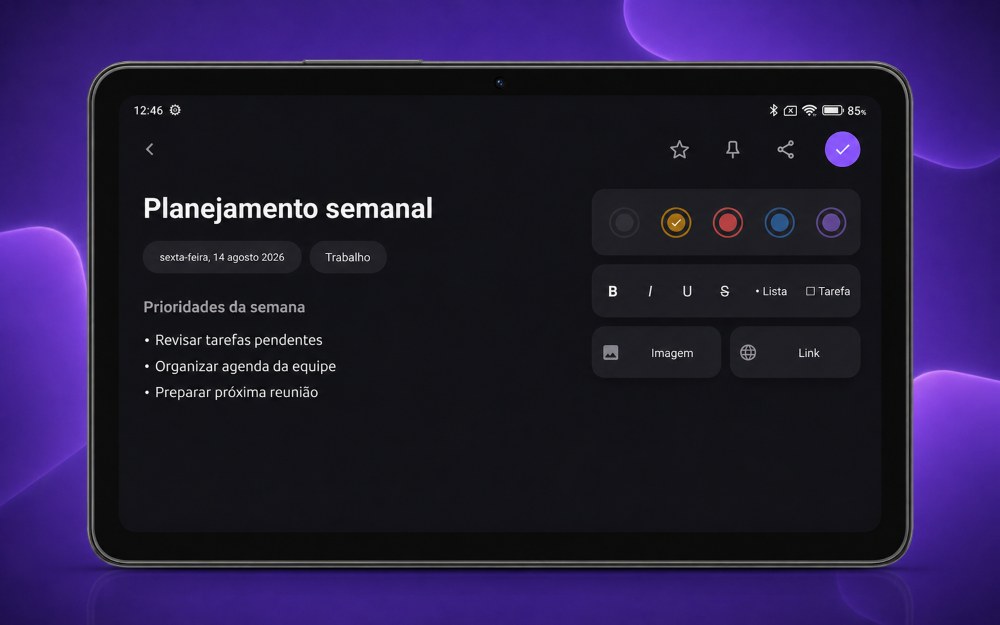

Pastas inteligentes
Separe trabalho, estudos e vida pessoal. Toda nota fica vinculada a uma pasta.

Minhas Notas Baixar em breveCapture pensamentos, organize projetos e encontre tudo quando precisar. Uma experiência leve, bonita e feita para o seu dia a dia.


Os recursos essenciais para registrar ideias e manter sua rotina organizada, sem transformar uma nota simples em uma tarefa complicada.
Separe trabalho, estudos e vida pessoal. Toda nota fica vinculada a uma pasta.
Use listas, tarefas, imagens, links e estilos para dar forma às suas ideias.
Mantenha o que importa sempre por perto e encontre suas notas rapidamente.
Crie e restaure uma cópia local dos seus dados quando precisar.
Adicione uma camada extra de proteção para manter suas anotações privadas.
O app acompanha o idioma do aparelho e oferece suporte a dez idiomas.

Crie uma estrutura clara para cada ideia. Destaque trechos, transforme itens em tarefas, escolha cores e acrescente referências — tudo em uma tela limpa e agradável.
Uma interface escura, confortável e consistente em celulares e tablets.
A experiência se adapta às telas maiores para você visualizar e organizar mais conteúdo com conforto.

O Minhas Notas acompanha automaticamente o idioma configurado no celular. Quando não houver tradução disponível, o inglês é usado como padrão.
Os dados ficam no seu dispositivo. Você decide quando criar ou restaurar um backup e pode proteger o acesso com PIN e biometria.
Minhas Notas está chegando ao Google Play.